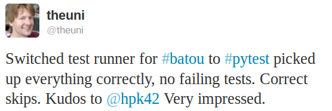
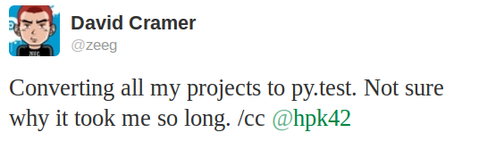
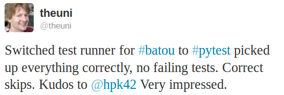
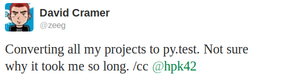

{kind=link}
{kind=link}

Project examples¶
Here are some examples of projects using pytest (please send notes via Contact channels):
- PyPy, Python with a JIT compiler, running over 21000 tests
- the MoinMoin Wiki Engine
- sentry, realtime app-maintenance and exception tracking
- Astropy and affiliated packages
- tox, virtualenv/Hudson integration tool
- PIDA framework for integrated development
- PyPM ActiveState’s package manager
- Fom a fluid object mapper for FluidDB
- applib cross-platform utilities
- six Python 2 and 3 compatibility utilities
- pediapress MediaWiki articles
- mwlib mediawiki parser and utility library
- The Translate Toolkit for localization and conversion
- execnet rapid multi-Python deployment
- pylib cross-platform path, IO, dynamic code library
- Pacha configuration management in five minutes
- bbfreeze create standalone executables from Python scripts
- pdb++ a fancier version of PDB
- py-s3fuse Amazon S3 FUSE based filesystem
- waskr WSGI Stats Middleware
- guachi global persistent configs for Python modules
- Circuits lightweight Event Driven Framework
- pygtk-helpers easy interaction with PyGTK
- QuantumCore statusmessage and repoze openid plugin
- pydataportability libraries for managing the open web
- XIST extensible HTML/XML generator
- tiddlyweb optionally headless, extensible RESTful datastore
- fancycompleter for colorful tab-completion
- Paludis tools for Gentoo Paludis package manager
- Gerald schema comparison tool
- abjad Python API for Formalized Score control
- bu a microscopic build system
- katcp Telescope communication protocol over Twisted
- kss plugin timer
- pyudev a pure Python binding to the Linux library libudev
- pytest-localserver a plugin for pytest that provides an httpserver and smtpserver
- pytest-monkeyplus a plugin that extends monkeypatch
These projects help integrate pytest into other Python frameworks:
- pytest-django for Django
- zope.pytest for Zope and Grok
- pytest_gae for Google App Engine
- There is some work underway for Kotti, a CMS built in Pyramid/Pylons
Some organisations using pytest¶
- Square Kilometre Array, Cape Town
- Some Mozilla QA people use pytest to distribute their Selenium tests
- Tandberg
- Shootq
- Stups department of Heinrich Heine University Duesseldorf
- cellzome
- Open End, Gothenborg
- Laboratory of Bioinformatics, Warsaw
- merlinux, Germany
- ESSS, Brazil
- many more … (please be so kind to send a note via Contact channels)